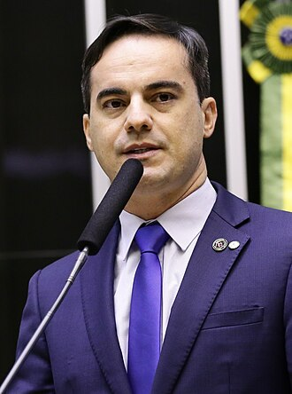

Capitão Wagner
Biografia
Wagner Sousa Gomes, também conhecido como Capitão Wagner, (São Paulo, 21
de janeiro de 1979) é um capitão da Reserva da Polícia Militar do Estado
do Ceará e político brasileiro filiado ao União Brasil (UNIÃO).[2][3] É
esposo da deputada federal Dayany Bittencourt (UNIÃO) e foi deputado
federal pelo Ceará entre 2019 e 2023.
Líder dos trabalhadores em segurança pública do Ceará, ele se
notabilizou por liderar um motim da Polícia Militar do Ceará em 2011, no
qual gerou insegurança a população e trouxe caos para a cidade de
Fortaleza com uma quarentena forçada. Na ocasião, trocou insultos com o
então governador Cid Gomes e seu irmão Ciro Gomes.
Propostas
- Armar a guada municipal
- Asfaltar ruas nao pavimentadas
- Diminuir cargos comissionados
- Diminuir gastos publicos no geral